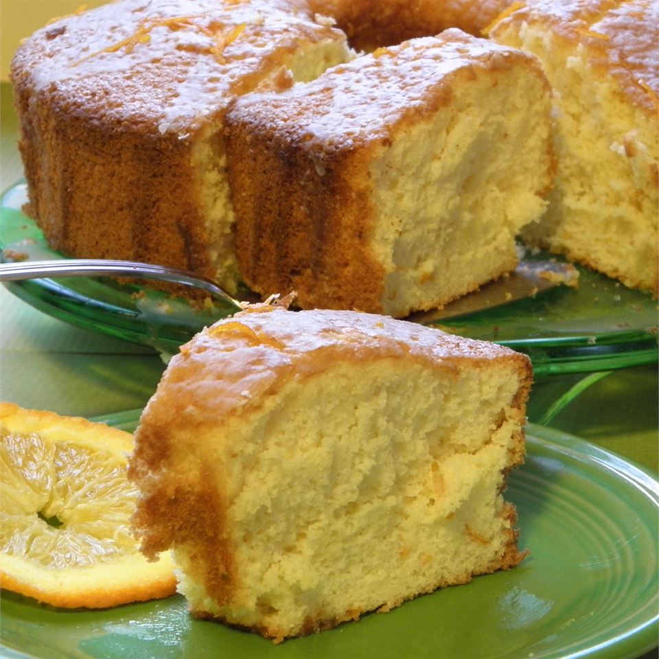

Orange Fluff Cake

Description
Wonderful cake with a true orangey flavor.
Ingredients
- 1 ½ cups sifted cake flour
- ½ cup white sugar
- 2 teaspoons baking powder
- ½ teaspoon salt
- 5 tablespoons butter, melted
- ⅓ cup fresh orange juice
- 1 teaspoon grated orange zest
- 6 egg yolks
- 1 teaspoon vanilla extract
- 6 egg whites
- ½ teaspoon cream of tartar
- ½ cup white sugar
- 1 cup confectioners' sugar
- 2 tablespoons fresh orange juice
- 2 teaspoons grated orange zest
Steps
-
Position a rack in the center of the oven and preheat to 350 degrees F (175 degrees C).
Have ready an ungreased 10-inch tube pan with a removable bottom.
Don't use a nonstick surface pan.
-
Sift the flour, 1/2 cup sugar, baking powder and salt into a medium bowl.
Form a well in the center and add the melted butter,
1/3 cup orange juice, 1 teaspoon orange zest, egg yolks and vanilla.
Beat for 1 to 2 minutes with an electric mixer.
-
In a large glass or metal mixing bowl,
beat egg whites and cream of tartar until foamy. Gradually add 1/2 cup sugar,
continuing to beat until stiff peaks form. Fold 1/3 of the whites into the batter,
then quickly fold in remaining whites until no streaks remain.
-
Pour batter into the ungreased tube pan. Bake for 60 to 75 minutes,
until the top springs back when lightly touched and a toothpick inserted comes out clean.
Immediately invert and let the cake hang upside down until completely cool.
-
Turn right side up and run a sharp knife around the edge to separate the cake from the pan.
Remove sides. Run a knife around the center tube and under the cake;
remove the pan bottom. Turn the cake right side up on a serving plate.
-
To make the glaze: In a small bowl combine the confectioner's sugar,
2 tablespoons orange juice, and 2 teaspoons orange zest.
Spread over the top of the cake, letting some drip down the sides.
Let stand at room temperature until glaze has set, about one hour.